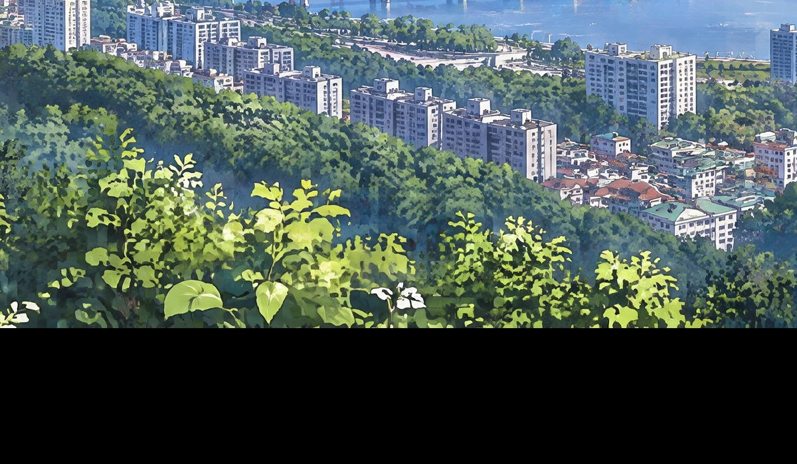
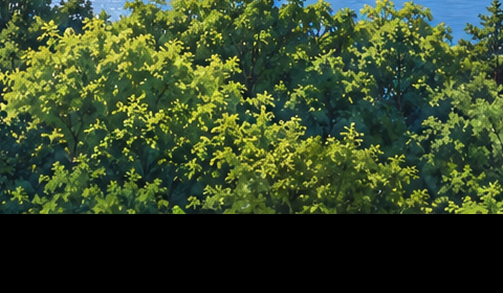
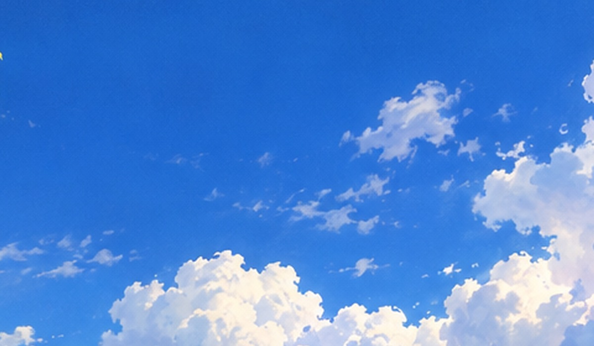
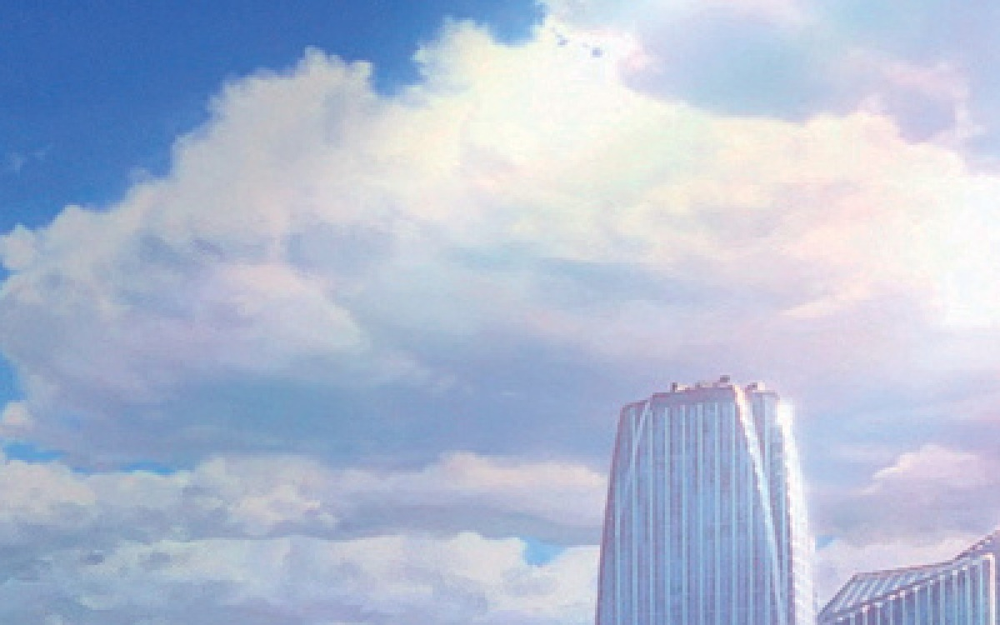

구름·나무가 자글자글한 원인 비교
모두 같은 화면 크기(4K 기준 원래 크기)로 잘랐어요.
1. 지금 결과: 4K로 직접 생성 + 레퍼런스

2. 같은 문구, 1536px로 생성 + 레퍼런스 없음 (단순 확대)

3. 1536px + 레퍼런스: 하늘에 망점 같은 결이 생김

참고: 레퍼런스 이미지 확대 (스크린샷 압축 노이즈)

모두 같은 화면 크기(4K 기준 원래 크기)로 잘랐어요.



